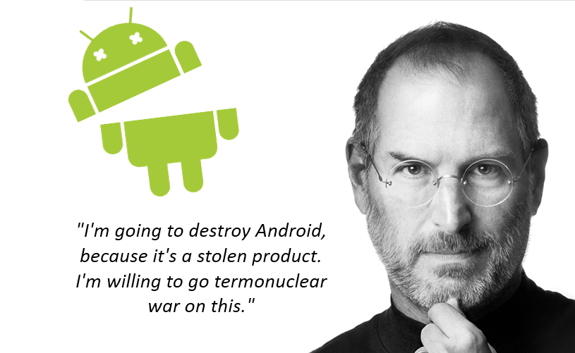
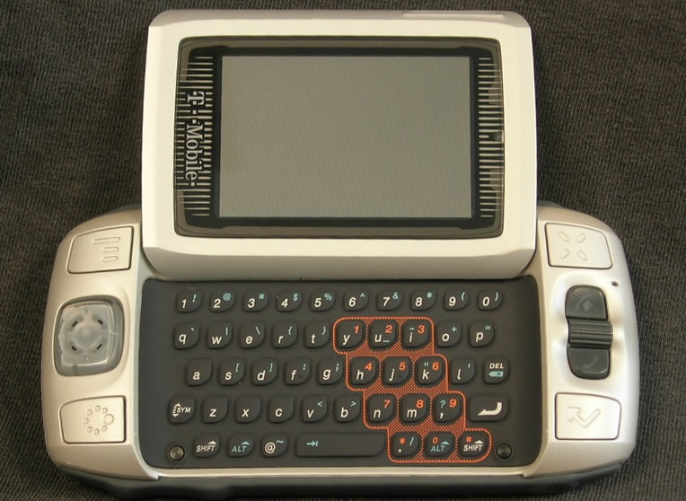
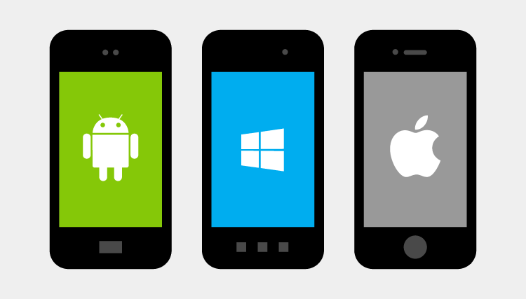
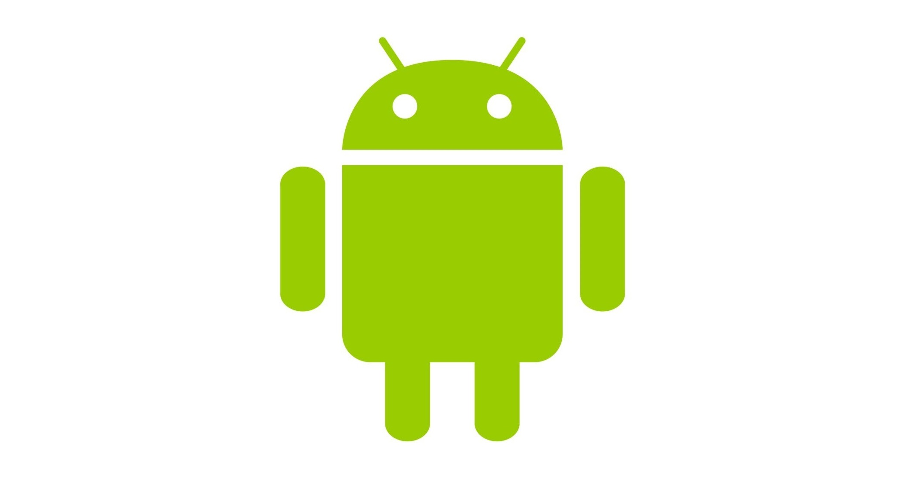
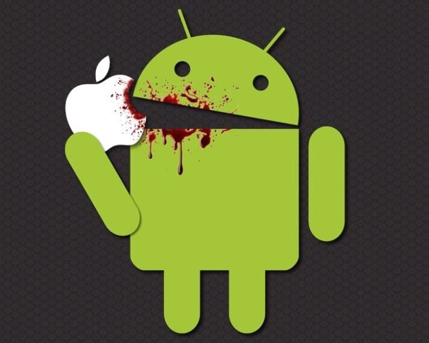
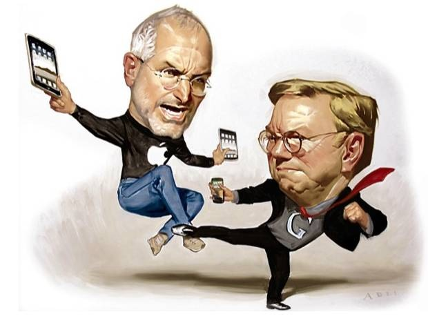
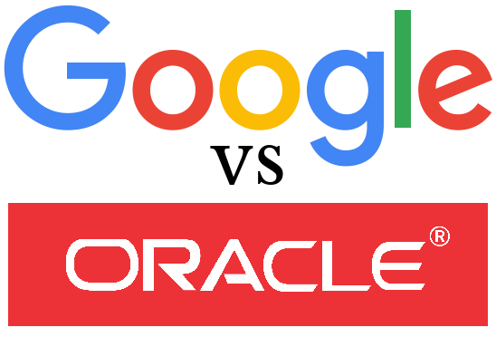

如果需要的话我会用尽我生命中最后的一点时间，花光苹果公司在银行里的400亿美元，去纠正他们的错误。我要去毁掉 Android，因为它是一款偷来的产品。我甚至愿意使用核武器去完成这一目的。
—— Steve Jobs by Walter Isaacson

前言
如标题所示，Unoffical History Of Android ，本文试图以娱乐的角度，看热闹的心态，东拼西凑地还原目前炙手可热的移动设备操作系统——“Android”的野史。
笔者所有言论无凭无据且不带针对性，纯属一时兴起所为。文中的八卦内容来源驳杂，无从考证，多摘抄整理自各大社区、论坛、百科、博客以及音频等，目的是记录这些趣事供自己日后翻阅。若激起大家对移动端开发的兴趣，纯属意外收获。若引起不适，更是无心之举。
Android 前生
Android 科技

2003年10月，Android之父安迪·鲁宾（Andy Rubin）与其他三位优秀程序员在美国加利福尼亚州帕罗奥图共同成立了Android科技公司（Android Inc.）。鲁宾把Android项目描述为“有极大的潜能开发更智能的移动设备，以更了解其用家的位置及偏好。”

但该公司早期的方向是为数字相机开发先进的操作系统。好在他们很快发现相机市场不足以实现其目标，并在五个月后努力Android变成了一款手机操作系统。安迪团队曾经研发出了一个名为“SideKick”的小众移动设备，小众到我都不确定上图就是当年那版机器。如图所示，这与当初市场上流行的手持设备并无太大差异，显然安迪团队起初并没有加入触控屏的想法。这也为后期被史蒂夫·乔布斯（Steve Paul Jobs）大骂抄袭埋下伏笔。
雪中送炭
在Android Inc. 成立初期，公司“创业未半而花光预算”。鲁宾在吸引投资者方面遇到困难，他也为公司花光所有钱，使公司面临着被驱逐的景况。就在此时，鲁宾的一位密友，斯蒂夫·帕尔曼（Steve Perlman）给他一个里面装有1万美元现金的信封，此后不久，此笔未披露的金额被视为种子资金。然而帕尔曼拒绝鲁宾所给他的股份，因他并非是以投资的方式给鲁宾这笔钱，他表示：“我这样做是因为我相信这件事，并且我想帮安迪。”
所以说有几个靠谱的朋友是真的重要。
另谋出路
授人以渔不如授人以钱，授人以钱都救不了的，多半是废了。显然，2005年Android科技就是到了这种境地，帕尔曼好心送来一推车的木炭，却没法使鲁宾团队度过整个冬天。于是乎，一个想法千呼万唤使出来———“被招安”。
据传，2005年6月，安迪团队7人先是来到了三星（SamSung），受到了三星20人的“盛情”对待。整个会议“军事法庭”般的严肃，安迪团队滔滔不绝地讲，对方20人一言不发。最后，本次会议以七人众收到了整齐划一的嘲笑为结尾散场。此次，三星狂妄地拒绝了Android，他不知道的是，未来移动手持设备这块大蛋糕，他再想分一块可就难了。
幸得良主
2005年7月11日，Google以高于$5,000万美元的价钱收购了Android科技公司，使其成为Google旗下的一部分。Android的关键人物包括安迪·鲁宾、利奇·米纳尔和克里斯·怀特，以及所有Android科技公司的员工都一并加入Google，作为收购的一部分。当时并没有人知道Google为何会作出这项收购，引来许多的猜测，后来证实Google正是借助该次收购正式进入移动领域。

根据前Google CEO埃里克·施密特（Eric Emerson Schmidt）的说法，收购Android目的是抗衡微软，试图阻止微软在移动市场复制桌面市场的成功。打压Windows可能是主要目的之一，因为同时他也使Apple伤得不轻，大量iPhone用户被抢占。当然这是后话了。
原鲁宾团队在Google内部的到了大力支持，资金上的支持暂且不提，还能自由招聘人才进入团队。这也为日后Android正式进入移动市场，与苹果分庭抗礼提供了有利条件。
据说此时三星突然意识到事情的严重性，私下联系到了安迪·鲁宾，试图扳回一局。但从我们今天看到的结果看，三星当年没能成功使Android反水。
Android 今世
正式诞生
在Google，由鲁宾领导的团队继续开发这个基于Linux内核驱动的移动操作系统的平台，该开发项目便是Android操作系统。自此，真正的 Android 正式诞生。后来，Google向手机制造商及手机网络供应商推出该平台，承诺提供一个灵活可靠并可升级的系统，为Android提供一个广阔的市场。Google组织了一系列硬件及软件的合作伙伴，并向运营商示意指公司开放到各种程度的合作。
命名&标志

“Android”一词最早出现于法国作家维利耶．德．利尔－阿达姆．利尔亚当（Auguste Villiers de l'Isle-Adam）在1886年发表的科幻小说《未来夏娃（L'Ève future）》中。他把外表像人的机器人取名为Android。
Android是一个全身绿色的机器人，半圆形的头部，有两支天线和空白的点作为眼睛。它的头部与身体之间有空白的区域，相似于一枚有平底的鸡蛋，两侧各有两个圆角矩形，作为它的双臂。Android的标志是由Ascender公司设计，颜色采用了PMS 376C和RGB中十六进制的 #A4C639 来绘制，这是Android操作系统的象征。
Android vs iphone
当 Android 还是半成品的时候，苹果发布了 iPhone 。iPhone的发布，严重打击了Android的士气，导致了第一部Android手机的推迟发布。
据说，安迪某天正在去开会的路上，他让司机赶紧路边停车，在路边看完了 iPhone 现场的发布会，然后和同事说：我们还是先不要发布我们的手机了，我们的手机没发布就已经落后了。在几周以内，安卓的团队就改变了策略，他们一定要开发一款超过iPhone的手机，当时有一部项目代号为“梦想”的，搭载了触控屏的手机成了安卓团队的研发重点，并定于2008年秋天发布。
当时的苹果公司和谷歌公司还是亲密的伙伴，共同的敌人还是微软，苹果公司发布iPhone的时候，甚至还邀请了谷歌公司的CEO施密特去台上讲了三分钟，并祝贺苹果手机大卖。而与此同时，在谷歌公司内部，为苹果公司开发地图，搜索引擎以及YouTube软件的谷歌团队，可以看到苹果的原型机，可以分析苹果使用的哪种CPU，哪种触控屏幕，可以说，除了苹果自己，谷歌最了解苹果手机。

根据 《In the Plex》 那本书里的叙述，谷歌做的有些不厚道，和他们宣传自己不作恶的广告差距有点大。比如说，当时安卓的主力研发机型叫 Sonner，是一款非触控屏，后来，谷歌知道了苹果在做触控屏以后，至于怎么知道的，当时谷歌的CEO施密特是苹果董事会的，可能见过，谷歌就开始做Dream这款机器，是触控屏的。而且还从苹果的safari团队挖人，做webkit版的chrome浏览器。

乔布斯的传记里也有提到，乔布斯觉得被背叛了。研发手机的时候，施密特是苹果的董事，苹果的一举一动他都知道。施密特说不染指触控屏，和苹果不竞争，结果手机一发布，却是苹果的直接竞争对手。后来施密特为了避嫌退出了苹果的董事会。
再后来，乔布斯病重的时候，施密特去看望他，不知二人有没有冰释前嫌。
Google vs Oracle

关于甲骨文公司就Android所使用的开发语言平台Java为最引人关注的权利纠纷事件。
2010年8月，甲骨文公司就开始对Google无授权使用Java语言实现侵犯了公司的专利在美国加州北区地方法院提起控诉，要求高达90亿美元的赔偿，其中牵涉了原供职于Sun公司的Java开发人员在转职Google开发Android的Java实现使用了原公司的实现，API接口的实现是否具有专利版权性，Android的Java实现是否对甲骨文公司的Java移动平台系列产品做成冲击而形成不正当垄断等问题。
主审法官是旧金山法院法官威廉·阿尔苏普(William Alsup)*8。阿尔苏普将这起诉讼称之为 “世界级知识产权诉讼案” ，阿尔苏普在3月28日已告知两家公司的律师，“只有一方能在这起世界级知识产权诉讼案中胜出”**。
2012年5月的诉讼结果为陪审团支持Google的诉求，认为API只是系统或操作的方法，不受版权保护。2012年10月甲骨文公司上诉，2014年5月，美国联邦巡回上诉法院认为API属于“计算机程序”仍受版权保护，判决Android侵犯了甲骨文公司Java的版权，但并不排除谷歌对其拥有合理使用性的权利。2014年10月Google向美国最高法院申请调卷令，请求最高院介入。2015年6月29日调卷令被拒绝，发往旧金山联邦法院进行审理。
业内人士西蒙·沃德利(Simon Wardley)称，如果API可以申请版权，那将给美国软件行业带来巨大灾难。沃德利在一封电子邮件中称，如果编程人员使用的普通功能也将被保护，那将导致更多诉讼。
阿尔苏普曾在听证会上称，让陪审团确信谷歌侵犯了不受版权限制、所有人可免费使用的编程语言的代码并不是一件轻松的任务。
2016年5月，旧金山联邦法院陪审团认定Android实现Java的API命名结构属于合理使用，不构成侵权，最终判Google胜诉。
2016年8月22日，Google在Android 7.0 Nougat中将专利的JDK替换成开源方案的OpenJDK，以彻底解决Java的专利问题。